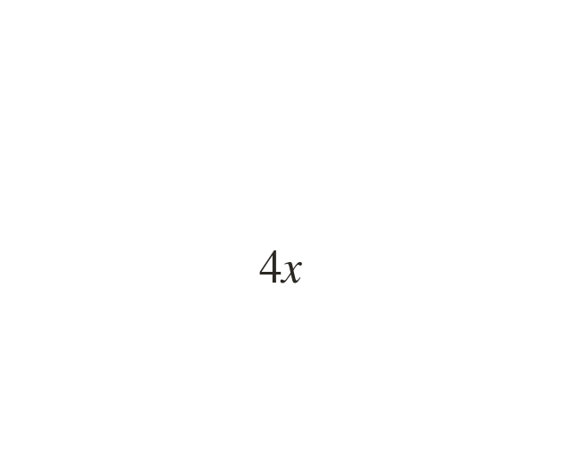
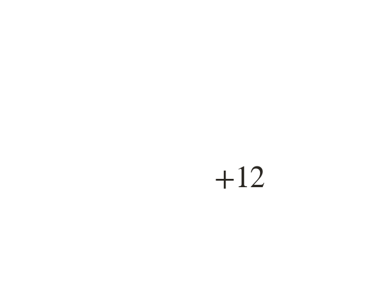
Every term inside is multiplied
A number outside a bracket multiplies every term inside it. So and the area grid shows both parts.
Brackets appear in almost every formula and equation. Today we open them up, the first step towards the quadratics of this topic.
Work down the page at your own pace. Write every answer in your book first, then click to check it.
Read each card, then follow the worked examples one step at a time.


A number outside a bracket multiplies every term inside it. So and the area grid shows both parts.
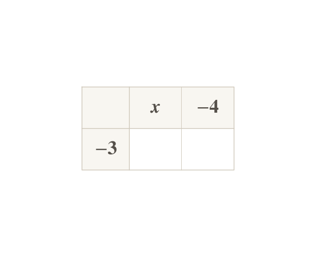
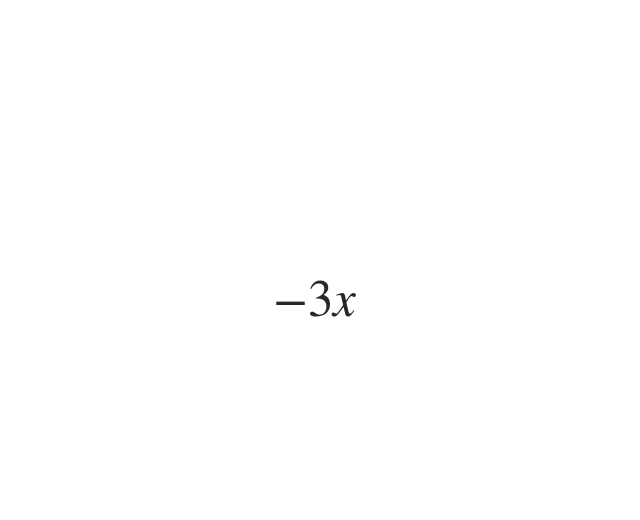
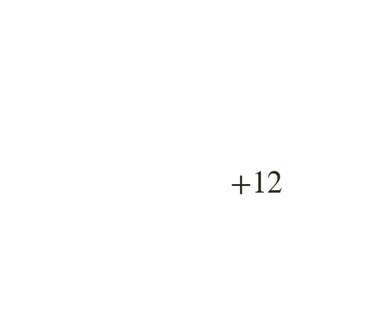
The sign in front of each term belongs to it. So
Two negatives multiply to a positive.
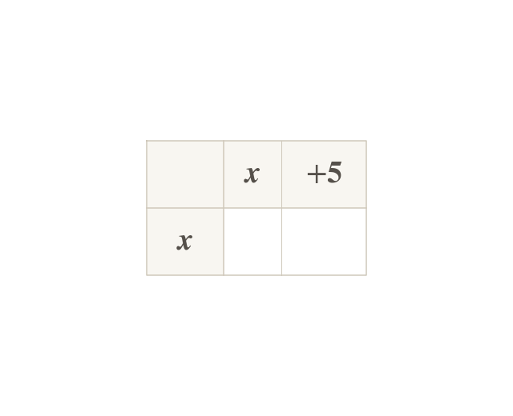
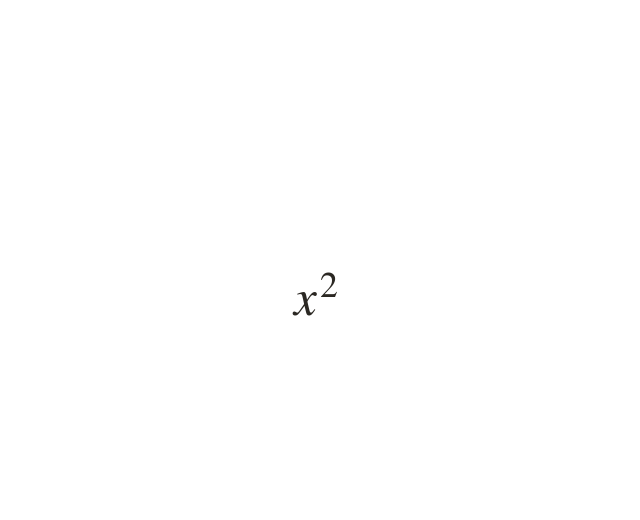
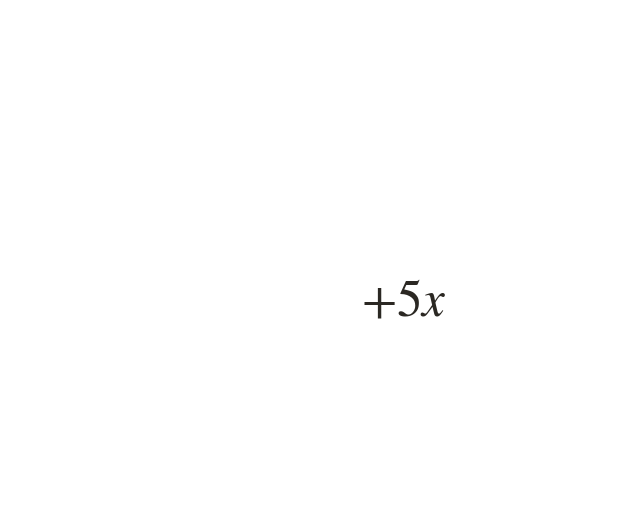
When the letter is outside, a letter times itself is written with a power. So
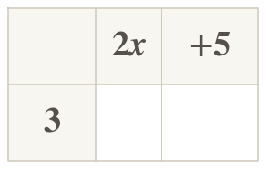
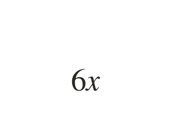
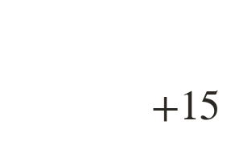
Pick an answer. If it's wrong, the feedback tells you which mistake it was.
Read each card, then follow the worked examples one step at a time.
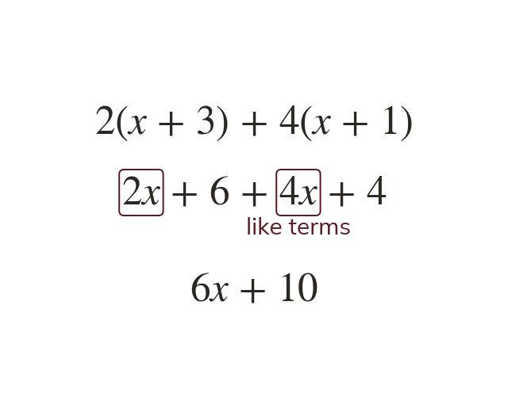
Each bracket is expanded on its own, and then like terms are collected. The x terms join the x terms, and the numbers join the numbers.
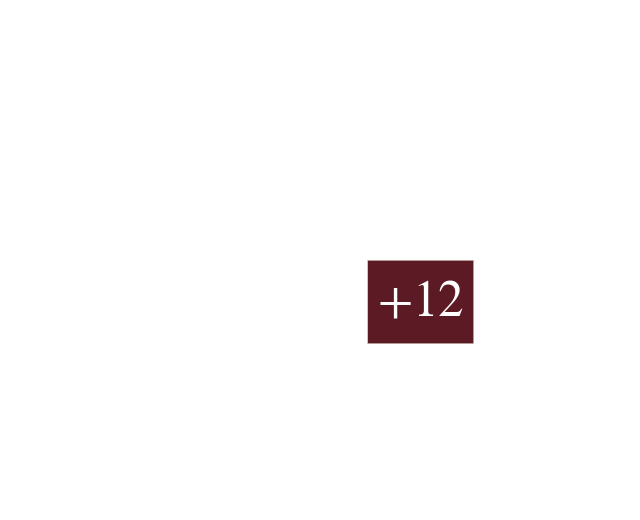
A minus in front of a bracket multiplies every term inside. So
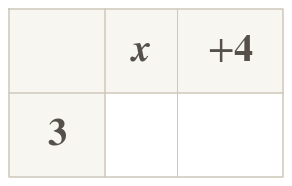
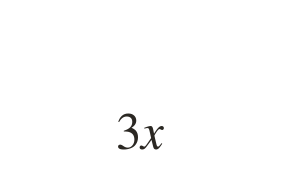

Pick an answer. If it's wrong, the feedback tells you which mistake it was.
Finished? Next lesson: 10.17.2 Expanding Double Brackets.
For each skill, tap the one that is true for you today. Your Revise pages start with anything you mark Not yet.
Your ratings are saved on this device only.
Log in, then search for a code to practise that skill.